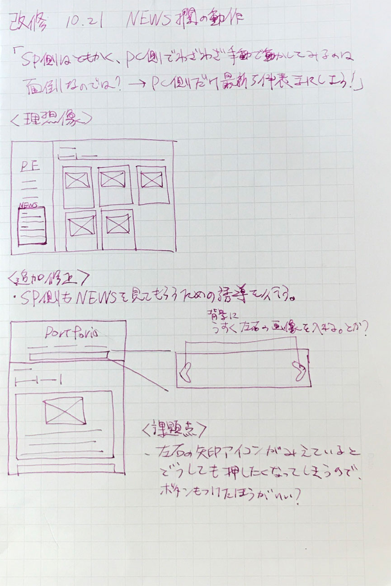
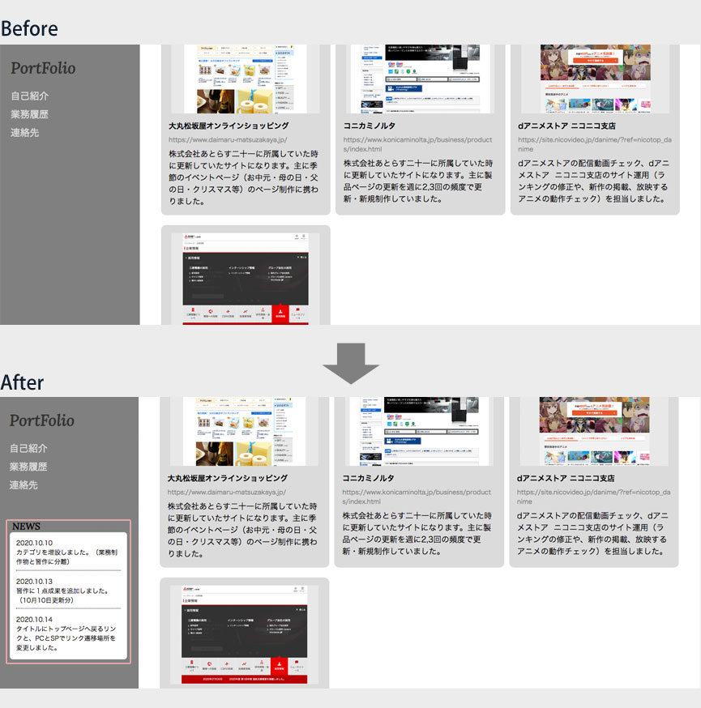
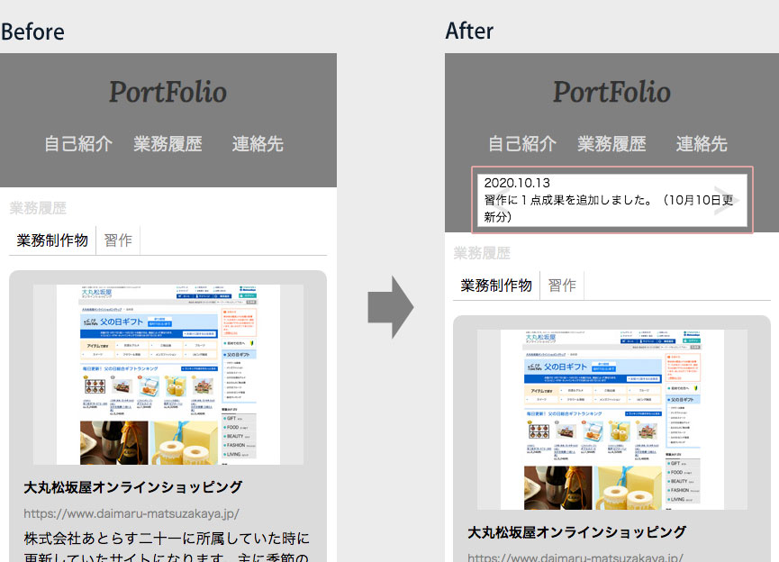

第3回改修 2020.10.21 ニュース欄を再追加・改修しました。初期案としてはPC側もスライド式の表示だったのですが、大きな画面で一々スライドする必要性が感じられなかったので一括表示に変更。SP版は自動でスライドする機能がないため何件か更新があることを背景画像の矢印で誘導することにしました。 制作時期 2020.10.20~21 更新箇所 NEWS欄 使用ツール Atom・PhotoshopCS5.1 制作時間 約2時間 ラフ  PC表示  SP表示 